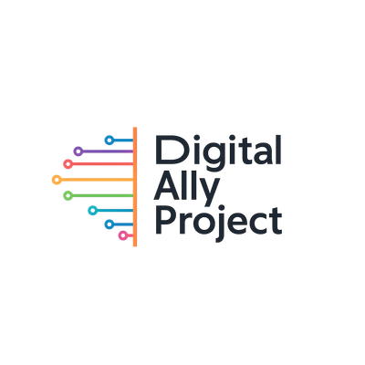
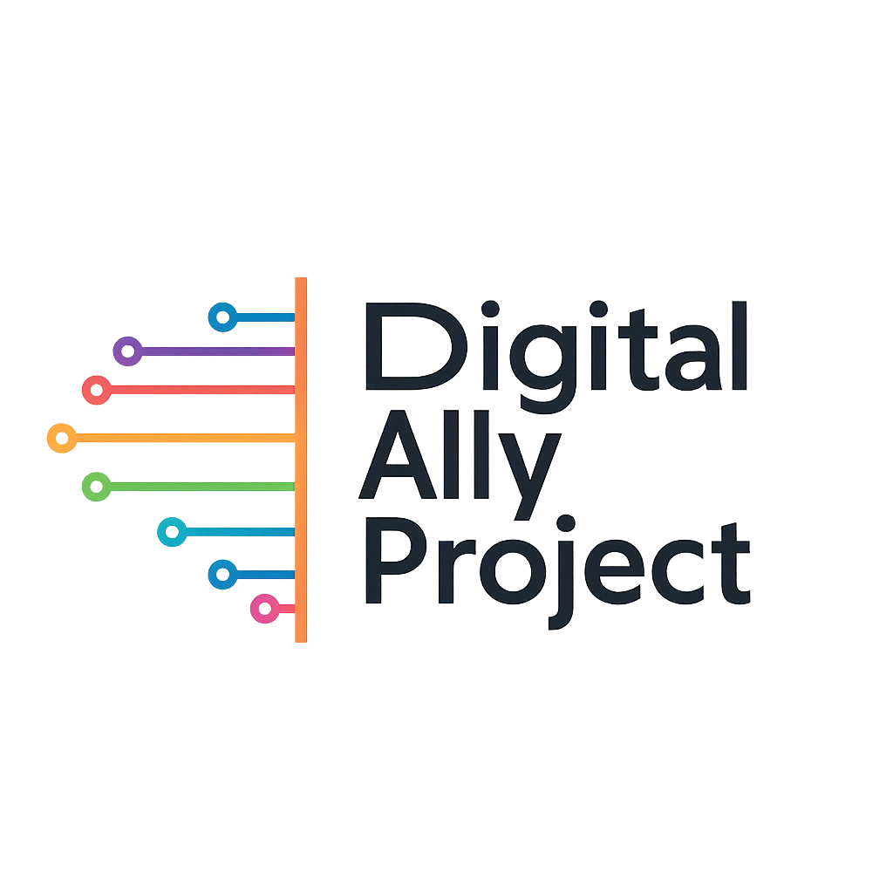

Open to All
Map, schedule, and vendor list are available to everyone — no sign-in required.
The Festival App · Board Briefing
A website that works like an app, a community-built heritage directory behind it, and six weeks to bring them to life. This briefing covers what we're building, who's building it, the timeline, the risks we're carrying, and what the festival nonprofit receives on July 17, 2026.
A website that works like an app. Open it once in your phone's browser, save it to your home screen, and it behaves like any other app — even offline. The next step is packaging it for the Google Play Store and Apple App Store so attendees find it the way they find every other app.
Open to All
Map, schedule, and vendor list are available to everyone — no sign-in required.
Sign In to Engage
Use the festival assistant chat or view your profile by signing in with email, Facebook, Google, or Microsoft.
Works Offline
Core features load even when the venue's cell signal is poor — because we plan for real conditions, not ideal ones.
This team is made up of community members using this project to gain real-world, production experience while solving a real community problem. This is not paid workforce development — it is community service that builds skills.
The build is led by an experienced architect and hosted by Digital Ally Project, ensuring mentorship, code quality, and accountability throughout.
Hosted by


Questions about the build, the cohort, or partnership? Reach Logan directly — tap a link to open your email, phone, or messaging app.
The codebase is released under the Apache 2.0 license — free to use, modify, and distribute forever. After July 17, 2026, the festival nonprofit owns the codebase outright, with no strings attached.
Community technologists, still learning, can ship a tool a nonprofit can trust — because the process is rigorous, documented, and transparent from day one.
Six tight weeks from first commit to festival day. Every milestone is scoped to what can realistically ship — the discipline is built into the schedule, not bolted on at the end.
Build begins.
Board demo — private feedback session.
Public launch. App goes live so attendees can start the scavenger hunt three days before the festival opens. Festival assistant activates.
Festival days. Two-day Southern Colorado Juneteenth Festival.
Festival assistant winds down. App stays live for post-festival access.
App stabilization complete. Codebase fully in the festival nonprofit's hands.
Festival Map
Basemap with points of interest for the festival grounds — easy to navigate even on a crowded day.
Live Schedule
Up-to-date schedule plus vendor, sponsor, and food-truck listings — all in one place.
Multi-Provider Sign-In
Sign in with email, Facebook, Google, or Microsoft — attendees use what they already have.
Donations via Zeffy
General-support donations to the festival nonprofit, processed through Zeffy's no-fee platform. The nonprofit pays zero platform fees on donations.
Festival Assistant
An AI-powered chat to help attendees navigate the festival and ask questions during the festival window. See the Meet ALAI tab for what's possible.
Heritage Directory
The 104-place community directory wired into the map — scope depends on board input. See Question 1.
The venue's cell signal is poor. Rather than hoping for the best, the app is built to handle that from day one.
Pre-loaded for offline use
The app loads itself onto each phone in advance. The map, schedule, and vendor list open instantly — no signal needed, no sign-in required.
Fast public surfaces
The map, schedule, and vendor list never need a sign-in. They open the moment the page loads — nothing to wait for.
The app's map shows the directory's 104 points of interest, presented in context for the festival — giving every attendee a window into Southern Colorado's Black-heritage story while they're on the grounds.
The directory situates the festival inside a year-round Southern Colorado Black-heritage narrative — useful long after the last tent comes down.
Geographic scope — a board decision
How far the map reaches is an open question for this board. The answer shapes both the scope of work and the story the app tells. See Question 1.
Six weeks is short
We say "no" to anything outside the agreed scope, so the things we do ship are solid. Scope discipline is the mitigation.
Poor venue cell signal
The app is built to keep working without a signal — not to hope the towers hold up. Core content pre-loads to every device.
No vendor lock-in
The tools we use are common enough that the festival could move the app elsewhere later if it ever made sense. The nonprofit is never trapped by our choices.
Resources on a clock
Azure nonprofit credits and the Zeffy API key both flow through one meeting with Jen. Without it, the donation pipeline stalls. See Question 3.
This isn't just a festival app that disappears after June 21. On July 17, the festival nonprofit takes full ownership of a documented, production-ready codebase.
Working app + source
Fully documented, Apache 2.0 licensed — free to use, modify, and distribute forever. No license fees, ever.
All festival data
Saved in a portable format the nonprofit can keep, move to another system, or close out entirely — their choice.
Maintainer's guide
A clear guide covering what to keep running year-round, what to switch off after the festival, and what to refresh next June.
Post-festival to-do list
A documented list of follow-up items: keeping software dependencies current, adding deeper security checks, and planning for the next year.